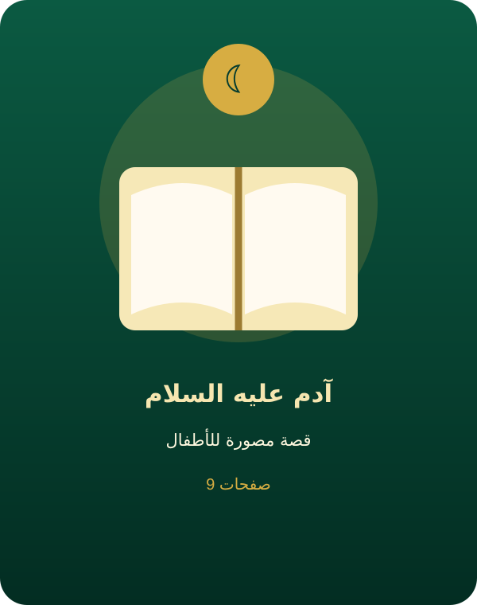
آدم عليه السلام
تبدأ القصة بخلق آدم وتكريمه، ثم الابتلاء والوسوسة، ثم التوبة والرجوع إلى الله.
9 صفحاتقصص بأحداث وصفحات مختلفة، ولكل صفحة رسمة تعليمية خاصة بها، مع أنشطة واختبارات للأطفال.

تبدأ القصة بخلق آدم وتكريمه، ثم الابتلاء والوسوسة، ثم التوبة والرجوع إلى الله.
9 صفحاتقصة نبي صالح نتعلم منها الصدق والعمل الصالح والصبر على الطاعة.
6 صفحاتقصة طويلة من الدعوة والصبر، وبناء السفينة ونجاة المؤمنين من الطوفان.
12 صفحات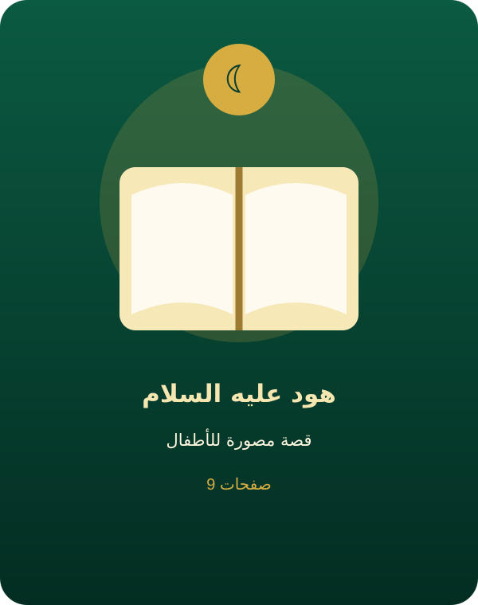
دعا هود قوم عاد إلى التوحيد وحذرهم من الكبر والظلم والاغترار بالقوة.
9 صفحات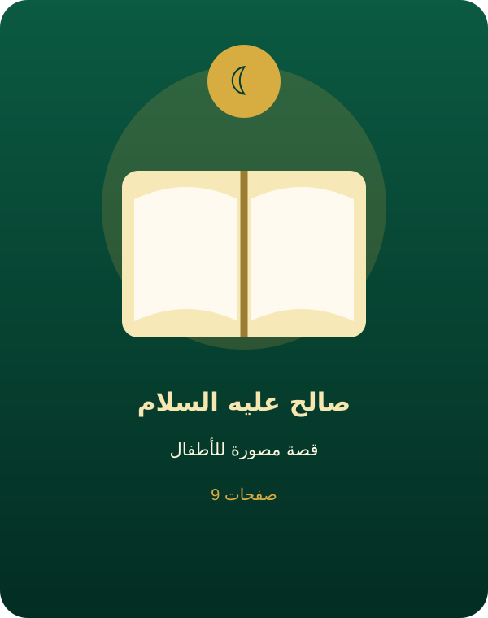
دعا صالح قوم ثمود إلى عبادة الله، وجاءتهم الناقة آية، لكنهم أصروا على العناد.
9 صفحاتقصة إمام التوحيد، وفيها مواقف عظيمة من رفض الشرك والصبر على الابتلاء وبناء الكعبة.
13 صفحات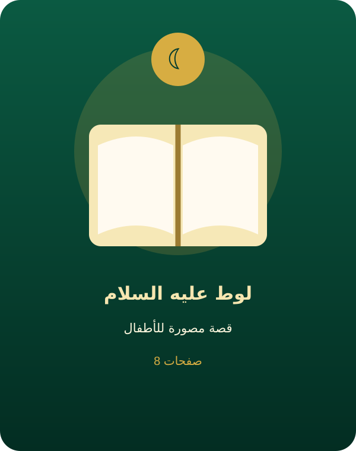
دعا لوط قومه إلى الطهارة وترك الفساد، فنجاه الله مع المؤمنين.
8 صفحات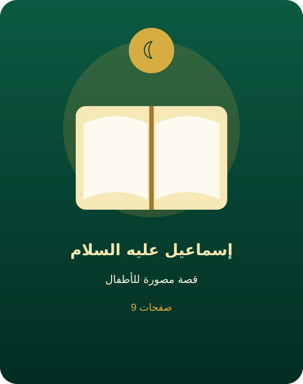
نتعلم من إسماعيل الصبر والطاعة، ومن قصته صلته بمكة وبناء الكعبة.
9 صفحات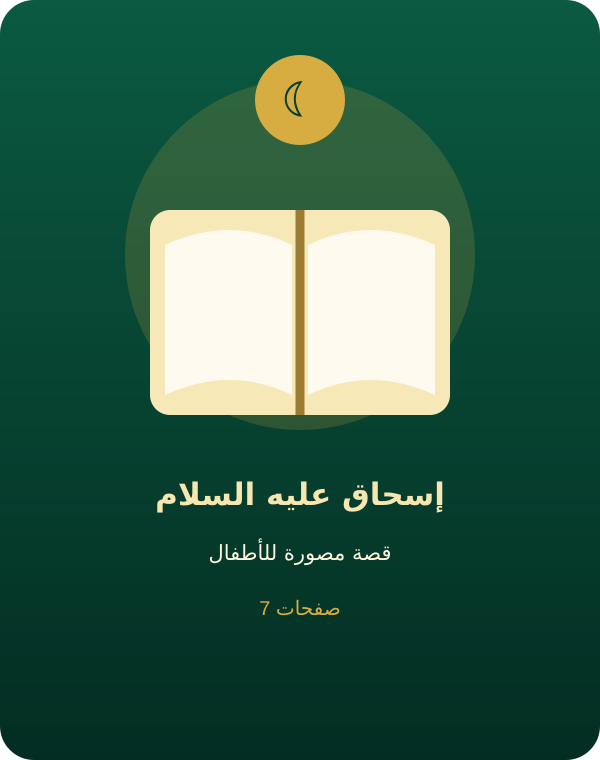
كانت ولادة إسحاق بشارة مباركة، وتعلمنا قصته فضل الطاعة والذرية الصالحة.
7 صفحاتقصة أب صابر واجه فراق يوسف، ولم يفقد ثقته برحمة الله.
10 صفحاتقصة مليئة بالابتلاء والصبر والعفو، تبدأ برؤيا وتنتهي بالتمكين واجتماع الأسرة.
18 صفحاتدعا شعيب إلى العدل في البيع والشراء ونهى عن التطفيف وأكل حقوق الناس.
9 صفحات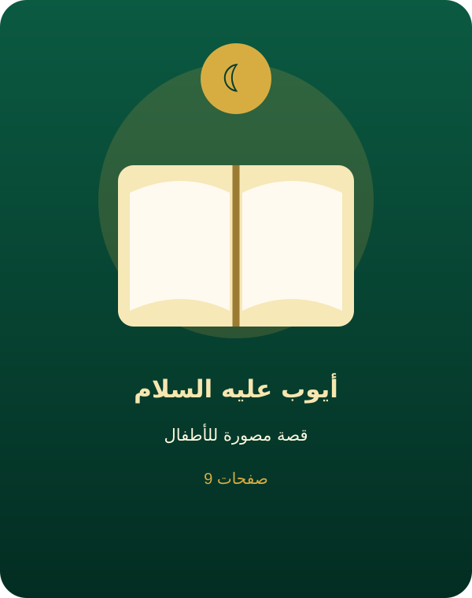
قصة الصبر الجميل والدعاء والفرج بعد طول البلاء.
9 صفحاتقصة موسى من أطول القصص، وفيها فرعون والخروج من مصر وانشقاق البحر ونجاة المؤمنين.
20 صفحات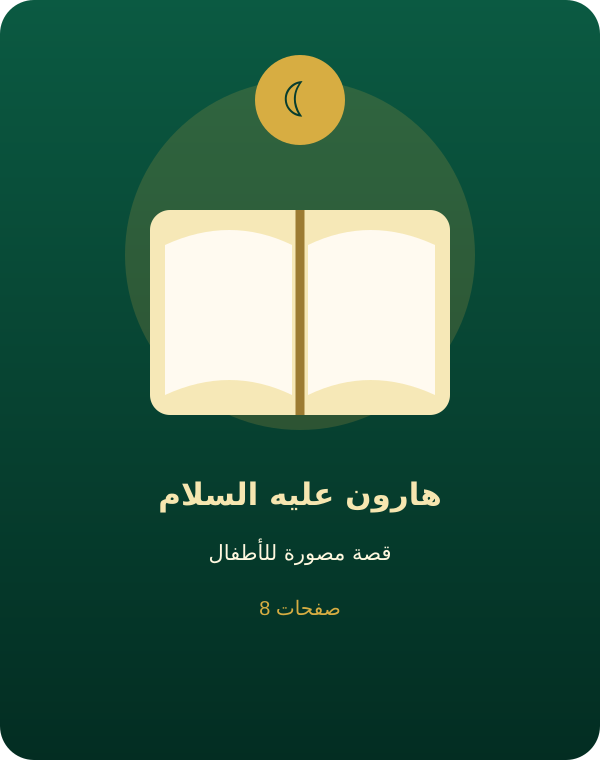
كان هارون سندًا لموسى عليهما السلام في الدعوة ومواجهة فرعون.
8 صفحاتجمع الله لداود الملك والحكمة والعبادة والعدل.
10 صفحات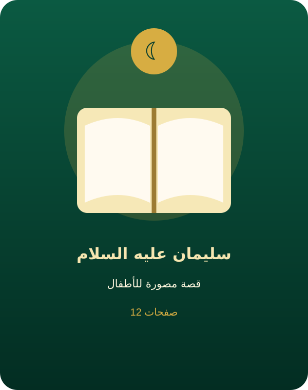
أعطى الله سليمان ملكًا واسعًا وحكمة، وعلمه شكر النعم.
12 صفحاتقصة تعلمنا سرعة الرجوع إلى الله، والدعاء وقت الشدة.
9 صفحات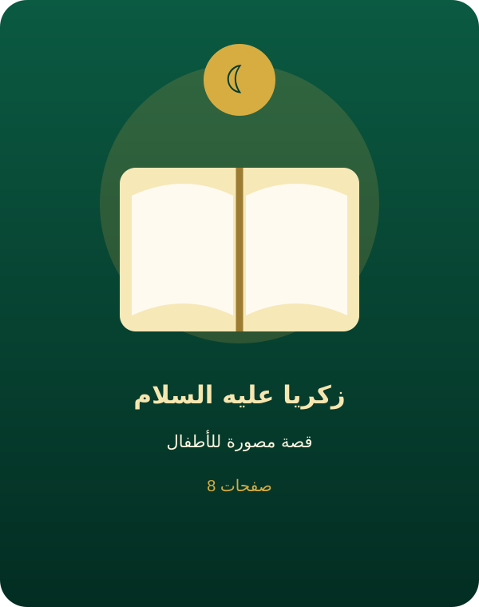
دعا زكريا ربه في خفاء، فبشره الله بيحيى.
8 صفحاتنشأ يحيى على الحكمة والبر والطاعة.
7 صفحات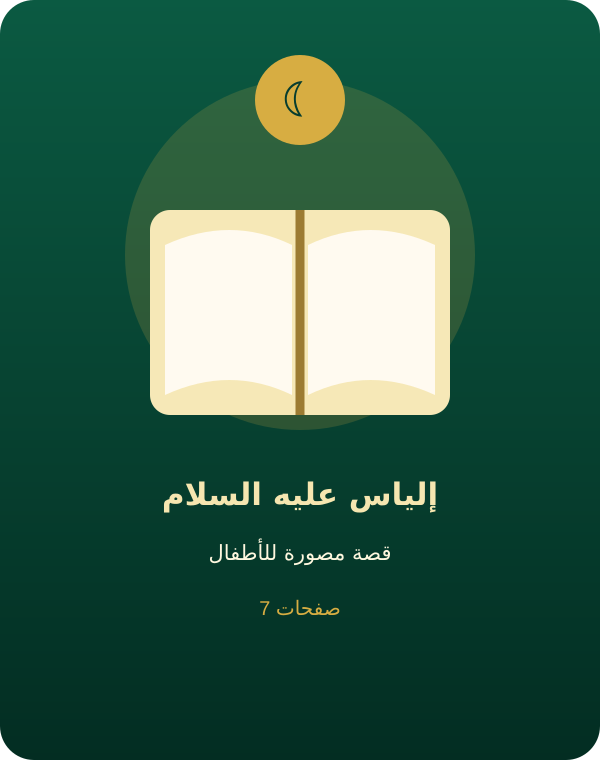
دعا إلياس إلى إخلاص العبادة لله وترك الشرك.
7 صفحات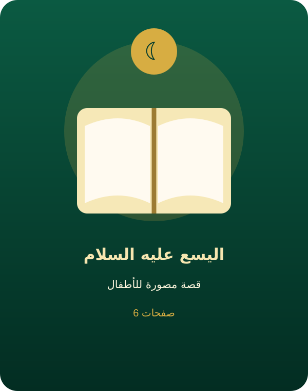
نتعلم من سيرته الثبات على الخير والعمل الصالح.
6 صفحات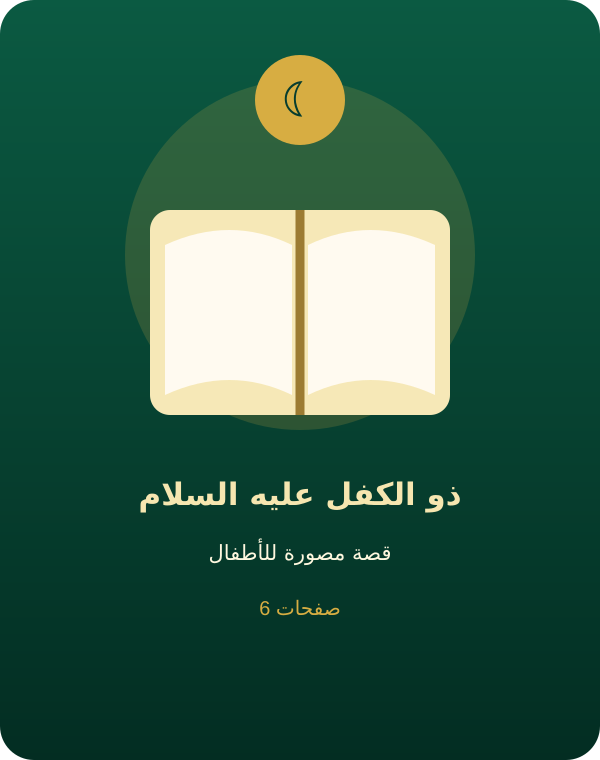
ارتبط ذكره في القرآن بالصبر والصلاح، وهي قيم عظيمة للأطفال.
6 صفحاتقصة عيسى تبدأ بالبشارة بمريم وتوضح معجزاته بإذن الله وثبات المؤمنين.
13 صفحات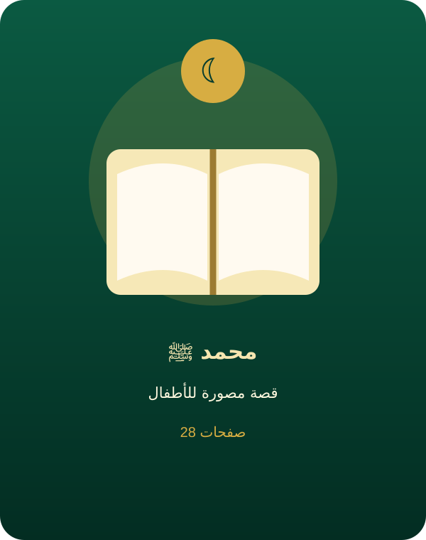
سيرة خاتم الأنبياء من مولده ونشأته وأمانته إلى الوحي والهجرة وبناء المجتمع وفتح مكة.
28 صفحات